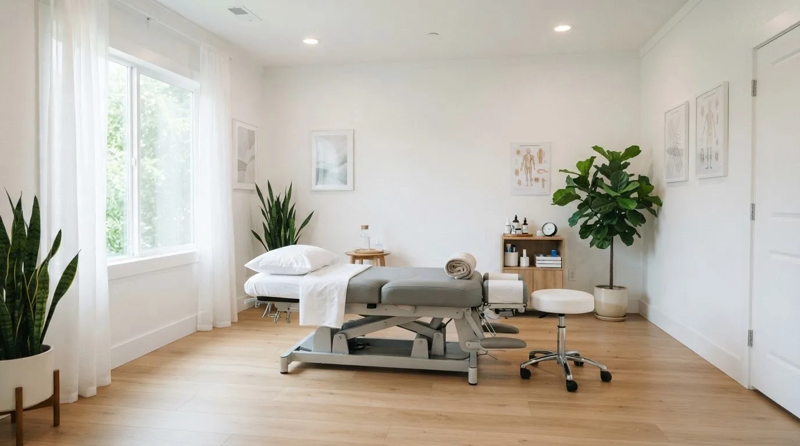
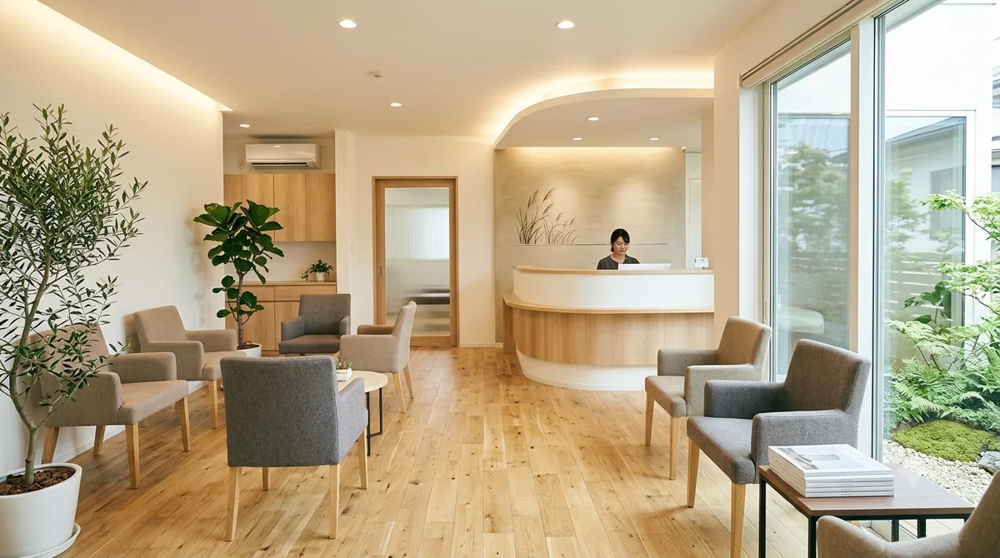
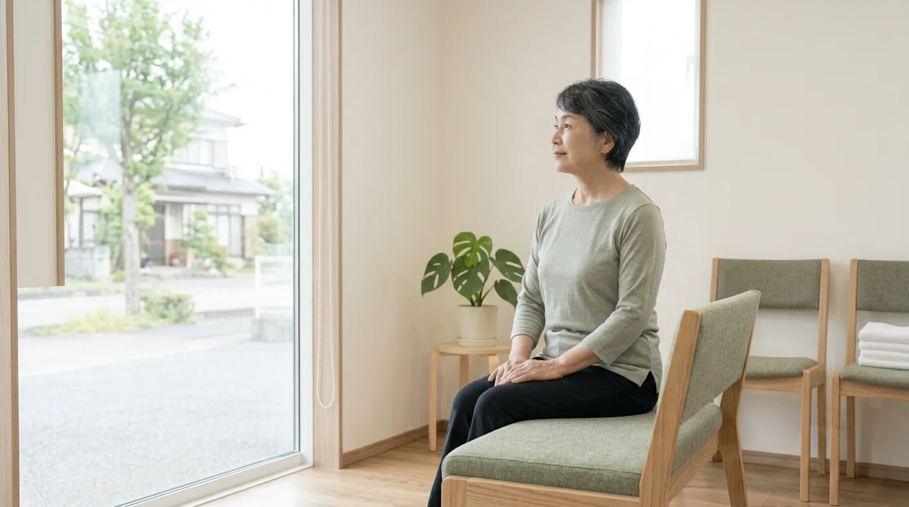
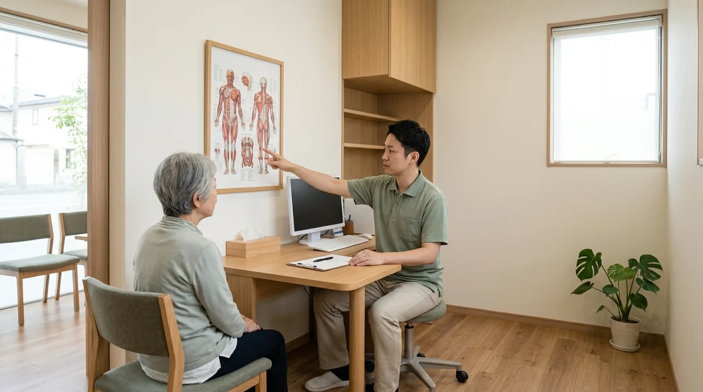
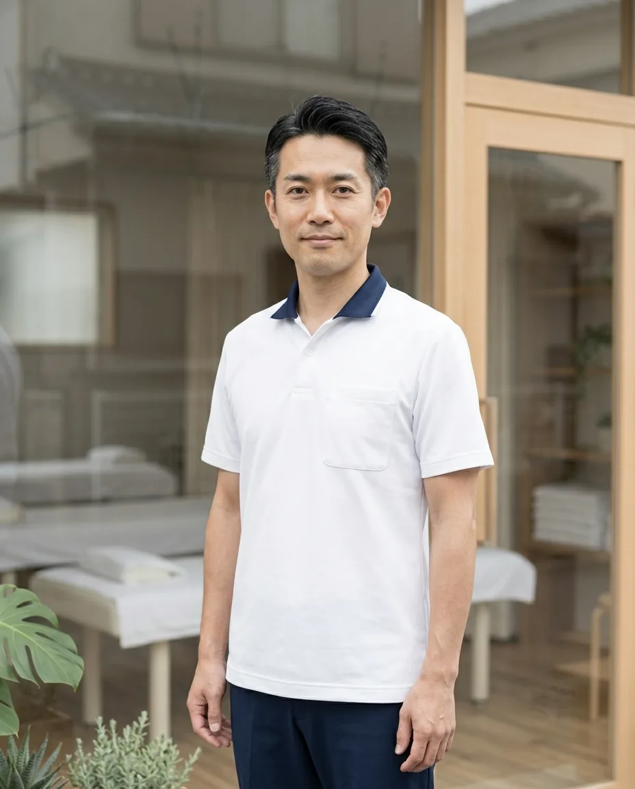

休診日のご案内
日曜・祝日は休診です。受付時間は9:00〜19:00、最終受付は18:30となります。休診の予定が変わるときは、こちらでお知らせします。
A-01 A ／ 入口 トップ
福岡市・接骨院／柔道整復師による施術
みなと接骨院のホームページは、からだの部位から探せるようにつくっています。首・肩、腰、ひざ。気になっているところを選ぶと、そのとき当院で行うこと、行わないこと、医療機関の受診をおすすめする場合が読めます。健康保険が使える範囲と料金も、先に書いてあります。

このサイトは、からだを6つの部位に分けて索引しています。気になる部位を選ぶと、症状別ガイドの該当箇所に移動します。どこを選べばよいか分からないときは、下の「はじめての方へ」からご覧ください。
この図は、気になる部位を選ぶための索引です。医学的な図解ではありません。部位の分け方は当院の案内上の区分です。
強い痛み、引かない腫れ、しびれ、けがをした直後など、判断に迷う状態のときは、医療機関の受診をおすすめする場合があります。まず受付でご相談ください。お身体の状態を確認したうえで、当院でできることとできないことをお伝えします。
福岡市の接骨院です。2016年の開院から、柔道整復師3名で施術にあたっています。お話を伺い、お身体の状態を確認したうえで、その日に行う内容を決めています。
同じ「肩がこる」でも、きっかけになった動作や普段の姿勢は人によって異なります。だからこそ、はじめにお話を伺う時間を大切にしています。施術中も、感じ方をその都度確認しながら進めます。
当院で行うのは、柔道整復師による手技を中心とした施術です。レントゲン撮影、投薬、注射は行いません。お身体の状態によっては、医療機関の受診をおすすめする場合があります。そのときは理由もあわせてお伝えします。
施術の内容や通う間隔についても、ご相談のうえでご案内します。分からないことや不安なことは、遠慮なくお尋ねください。


01
いつから、どんなときに気になるのか。お仕事や普段の姿勢、運動の習慣までお聞きしてから施術に入ります。行う内容と、行わないことも、そのときにお伝えします。
02
健康保険が使えるのは、急性のけが（骨折・脱臼・打撲・捻挫・挫傷）に限られます。いつ、どこで、何をして痛めたかを受付で伺い、使えるかどうかをはっきりお伝えします。
03
強い痛み、引かない腫れ、しびれ、けがの直後など、当院の施術より先に受診をおすすめする状態があります。そのときは理由もあわせてお伝えします。
接骨院で健康保険が使えるのは、急性のけがに限られます。あてはまらない場合は自費のメニューになります。曖昧にせず、受付ではっきりお伝えしています。
健康保険が使えるもの
受付で、いつ・どこで・何をして痛めたかを伺います。保険をご利用の場合は、健康保険証（またはマイナ保険証）をお持ちください。
健康保険が使えないもの（自費）
これらは自費のメニューでご案内します。同じけがで他の医療機関にかかっている期間は、重ねて保険を使うことはできません。
交通事故によるおけがは、自賠責保険の対象となる場合があります。保険会社とのご確認が必要ですので、まず受付にご相談ください。労災保険の取り扱いはありません。お勤め中・通勤中のおけがは、まずお勤め先にご確認ください。
保険と料金を詳しく読むC-03 保険と料金 →ご来院から次回のご案内まで、4つの段階でご説明します。初めての方は、受付からお会計まで全体で60分ほどを目安にお考えください。
受付でお名前と、気になっている箇所を伺います。健康保険をご利用の場合は保険証をご提示ください。予約なしのご来院も受け付けていますが、お待ちいただく場合があります。
いつから、どんなときに気になるのか。お仕事や普段の姿勢、運動の習慣まで伺います。お身体の状態を確認したうえで、その日に行う内容と、行わないことをお伝えします。分からないことはこの時間に何でもお尋ねください。
伺った内容をふまえて、柔道整復師が手技を中心とした施術を行います。痛みや強さの感じ方には個人差があるため、その都度確認しながら進めます。更衣スペースがあり、施術着（M／L）を無料でお貸ししています。
その日に行った内容と、ご自宅での過ごし方をご説明します。通う間隔についてもご相談のうえでご案内します。次回のご予約はLINEからも承ります。

当日の持ち物
健康保険証（保険をご利用の場合）／お薬手帳（お持ちの方）／医療機関の書類や画像（お持ちの方）。服装は普段のままで構いません。更衣スペースと施術着のご用意があります。
柔道整復師3名で施術にあたっています。施術者のご指名はLINEでお知らせください（指名料はありません）。
2016年に当院を開きました。初めてお越しになる方には、必ず「できることと、できないこと」を先にお伝えするようにしています。当院は柔道整復師による手技の施術を行う場所で、レントゲン撮影や投薬は行いません。そのぶん、お話を伺う時間と、お身体の状態を確認する時間を長めに取っています。
受付には高木と岸本の2名も柔道整復師として立っています。保険が使えるかどうかの確認は、どの者にお尋ねいただいても構いません。

全10ページを、4つの区分に分けています。どのページからでも、からだの地図で気になる部位に戻れます。
6つの部位ごとに、こんなときにご相談いただけること、当院で行うこと、行わないこと、医療機関の受診をおすすめする場合をまとめています。
見る B-02からだから探す6つのメニューで実際に何をするのか。手技の内容、あてる部位、所要時間を1ページにまとめています。
見る B-03からだから探す自費メニューのひとつを深くご説明します。当日の流れ、所要時間、受けていただけない場合、注意していただきたいことまで。
見る C-01通う前に知る受付から施術、次回のご案内まで。持ち物、着替え、所要時間、予約の取り方をまとめています。
見る C-02通う前に知る6つのメニューの区分、保険適用の有無、施術時間、料金。お支払い方法もこちらです。
見る C-03通う前に知る健康保険が使える範囲、使えないもの、負担割合ごとの目安。交通事故の取り扱いについても書いています。
見る C-04通う前に知る予約、持ち物、着替え、お子さま連れ、駐車場、支払い方法など、受付でよく伺うことをまとめています。
見る D-01院のこと柔道整復師3名のご紹介と、待合・施術・ストレッチの各スペース、設備のご案内です。
見る D-02院のこと住所、駐車場、受付時間、ご予約の取り方。LINEとメールでご連絡いただけます。
見るご予約やご相談は、LINEまたはメールから承ります。「これは診てもらえますか」というご相談だけでも構いません。
| 院名 | みなと接骨院（MINATO SEKKOTSUIN） |
|---|---|
| 住所 | 福岡県福岡市〇〇区〇〇3-1-8 |
| 最寄り | 地下鉄〇〇駅から徒歩6分 |
| 駐車場 | 3台（無料） |
| 受付時間 | 9:00〜19:00（最終受付 18:30） |
| 休診日 | 日曜・祝日 |
| 施術者 | 柔道整復師 3名 |
| お支払い | 現金／クレジットカード／QRコード決済 |
| お問い合わせ | info@example.com |
| LINE | LINEで問い合わせる |
ご希望の日時をお送りください。受付から返信で日時を確定します。予約なしの当日受付も承りますが、お待ちいただく場合があります。
LINEで問い合わせる メールで問い合わせる変更・キャンセルはLINEから前日までにご連絡ください。キャンセル料はいただいていません。施術者のご指名も承ります（指名料はありません）。
休診日のお知らせや、院内の様子をInstagramでお伝えしています。施術中の写真や、お身体の状態についての投稿は行っていません。
日曜・祝日は休診です。受付時間は9:00〜19:00、最終受付は18:30となります。休診の予定が変わるときは、こちらでお知らせします。
待合スペースはソファ4席です。入口から受付まで段差はありません。ベビーカー・車いすのままお入りいただけます。
施術ベッドは4床、カーテンで仕切っています。タオルとリネンは、ご来院ごとに新しいものを用意しています。
ご予約はLINEまたはメールで承ります。予約優先ですが、当日の受付もできます（お待ちいただく場合があります）。
SNSのリンク先はサンプルです。実在のアカウントではありません。